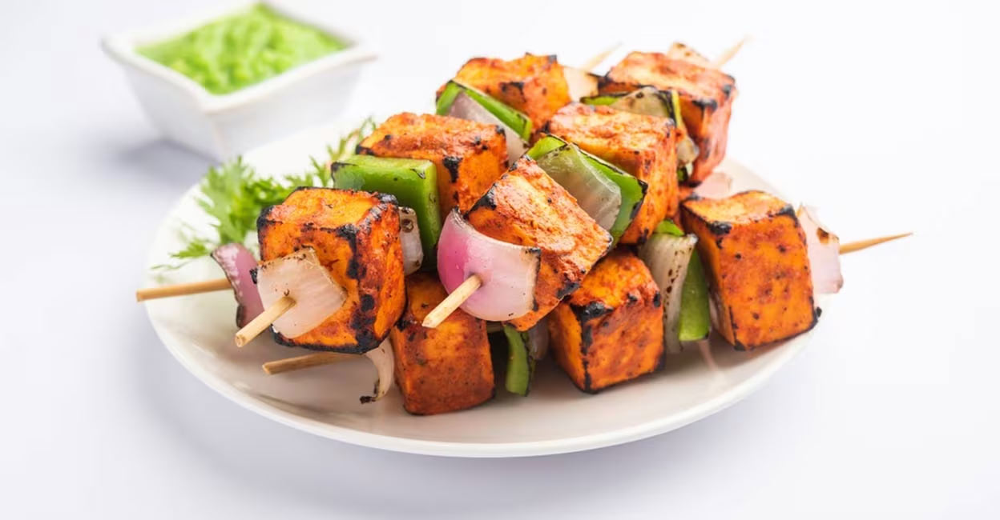

Paneer Tikka

Description
it's a famous Indian appetizer where pieces of paneer (Indian cottages cheese) and marinated with yogurt and spices and then grilled until charred.
Onion, bell peppers and tomatoes are also added to the marination along with paneer.
Once cooked, it's served with cilantro mint chutney, onion slices and lemon wedges.
Ingredients
- 1 cup plain yogurt
- 1 tablespoon ginger-garlic paste
- 1 teaspoon lemon juice
- ¼ teaspoon ground turmeric
- ¼ teaspoon ground red chile pepper
- ¼ teaspoon ground cumin
- ¼ teaspoon garam masala
- salt to taste
Steps
- Line a fine-mesh strainer with muslin or cheesecloth and set inside a small bowl. Pour in yogurt; let drain for 15 minutes. Discard liquid.
- Mix drained yogurt, ginger-garlic paste, lemon juice, turmeric, chile powder, cumin, garam masala, and salt together in bowl. Add paneer, onion, and green bell pepper and mix well. Marinade for 1 hour.
- Preheat grill for medium heat and lightly oil the grate.
- Skewer marinated paneer, onion, and bell pepper onto metal skewers. Grill until vegetables are soft and cheese is browned, 6 to 8 minutes. Brush with vegetable oil and grill for 1 minute more.
- Mix onion rings with green chutney and serve with skewers.